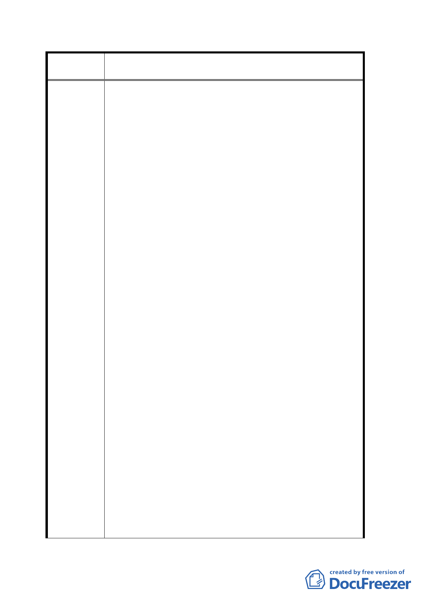

案 名 修訂台北市士林官邸特定商業區細部計畫案
同步完成。
伍：高壓電纜地下化工程，遷移至排水溝東側之公園區域。
陸：本案應適用停車場、商業區綜合設計獎勵及其他各種
獎勵辦法。
柒：代號 C2 土地臨福林路北側右方之畸零土地，主張修訂
為公有綠地或廣場。（如附圖）
捌：代號 C2 及 C1 土地臨福林路之中心線，應向中山北路
方向移動八公尺（以修訂前、修訂後實際比例圖清楚
標示），讓地形與修訂前相符，並使 C2 土地能達 70%
之建蔽率規定。
玖：台北市政府未與本案土地所有權人等，達成共同協議
前，要求停止任何施工並暫緩公告實施。
拾：『本開發案原始地主未受益反受害』。若台北市政府及
都市計畫委員會，不願意接受、不同意陳情人等之『建
議辦法』，應將區段徵收前之全部土地，歸還全部原土
地所有權人，再以臨近住宅、商業區公告地價加成後，
以公共設施保留地全部徵收，規劃為公園用地，以息
民怨，並嘉惠全台北市市民以昭公信。（請參閱陳情人
異議書內容。）
結論：台北市政府於民國 89 年 2 月 25 日府都二字第
8901534100 號公告實施，該細部計畫未顧及抵價地
發還百分之五十是公平原則，且在僅發還百分之四
十抵價地中，竟包含退縮車行道路、人行步道、帶
狀綠地開放空間、鋪設高壓地下電纜及其他地下公
共管線等公共設施，明顯違反土地法、都市計畫法、
土地徵收條例、共同管道法等等區段徵收相關法令
及規定，屬實質違法，該行政處分實有明顯重大瑕
疵。臺北市政府官員知法違法，草率通過該都市計
畫，並於刻意時間發布主要計畫與細部計畫，爾後
強行通過徵收案，明顯違反憲法保障人民財產之權
益。部份陳情人更因而遭受池魚之殃，衍生遺產稅
問題。臺北市政府理應賠償土地所有權人等，在此
二六